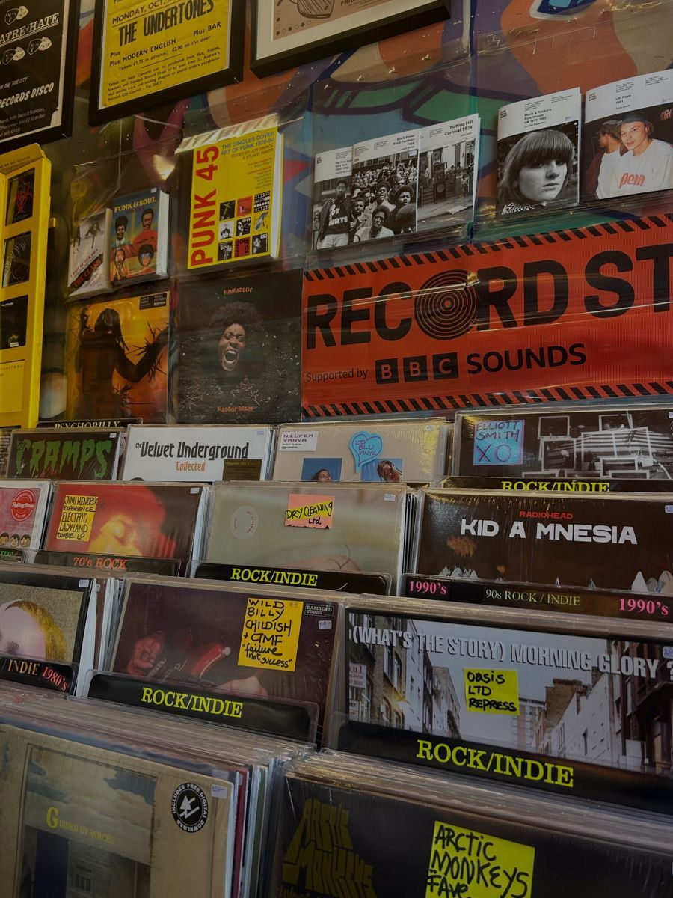
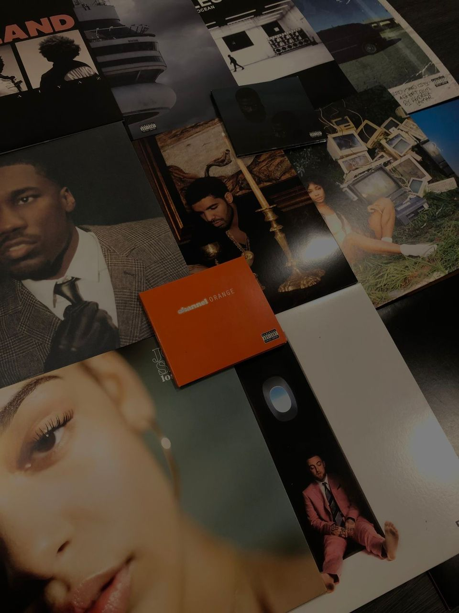

Music comes in many forms, and each genre refects a different side of who i am.

Gospel
Gospel is the music I turn to when I need to feel grounded and centered. It reminds me of faith, peace, and hope, especially during overwhelming moments. It feels like reassurance — a gentle reminder that everything will be okay. It lifts my spirit, clears my mind, and draws me closer to the Almighty.
Amapiano
Amapiano music consists of rhythmic sounds that make people dance. The beats instantly make me feel active and change my emotional state. The music creates an ideal atmosphere for enjoying positive moments with friends during late-night hours.

Pop
Pop is just pure energy. It is my go to when I need something uplifting and effortless. It’s the soundtrack to my best moments—parties, road trips, or just dancing in my room.

Indie Rock
I love Indie because it doesn't try to be perfect. It’s a bit messy and a bit loud. The kind of music I listen to when I want to think or reflect.
